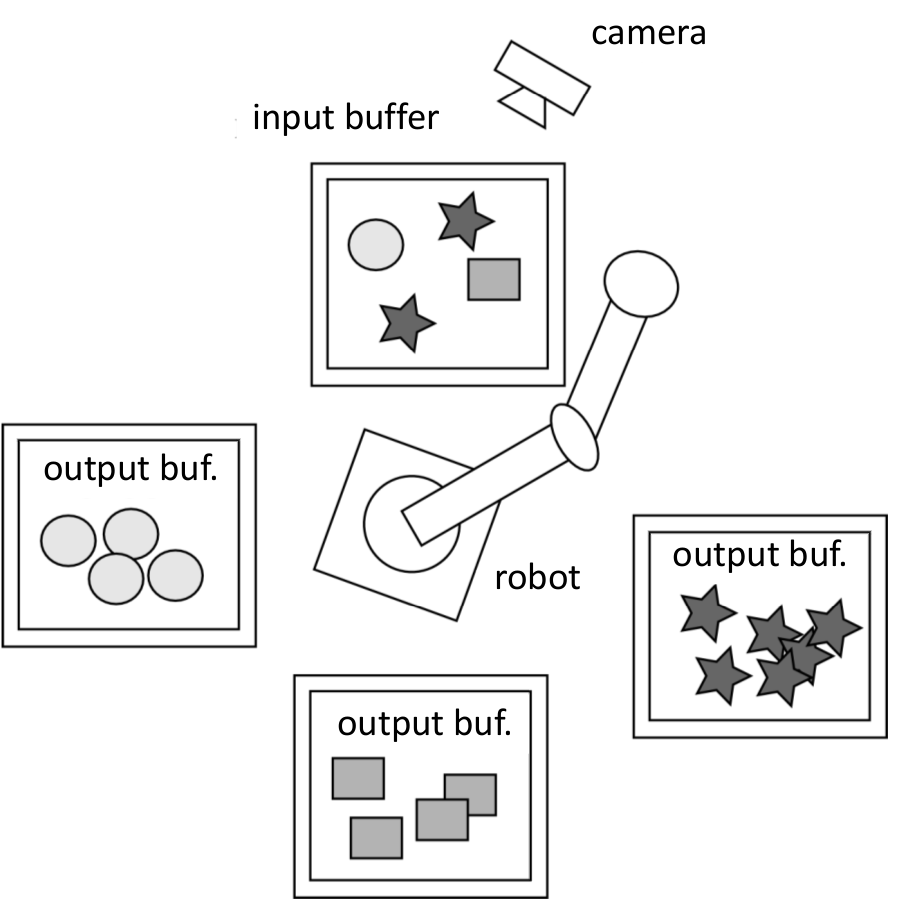
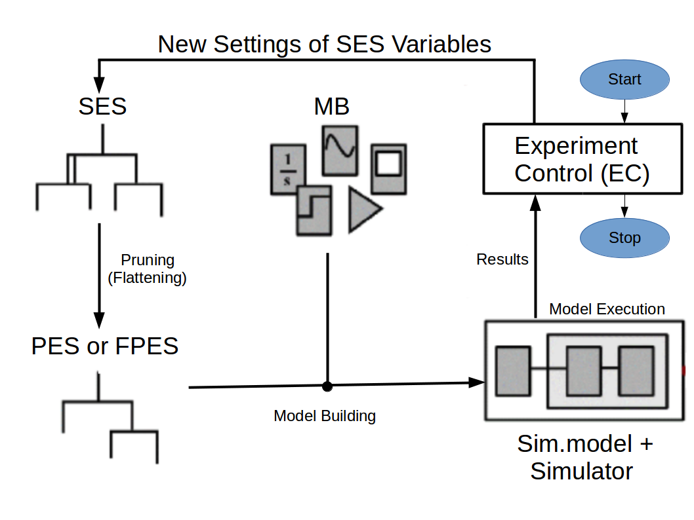
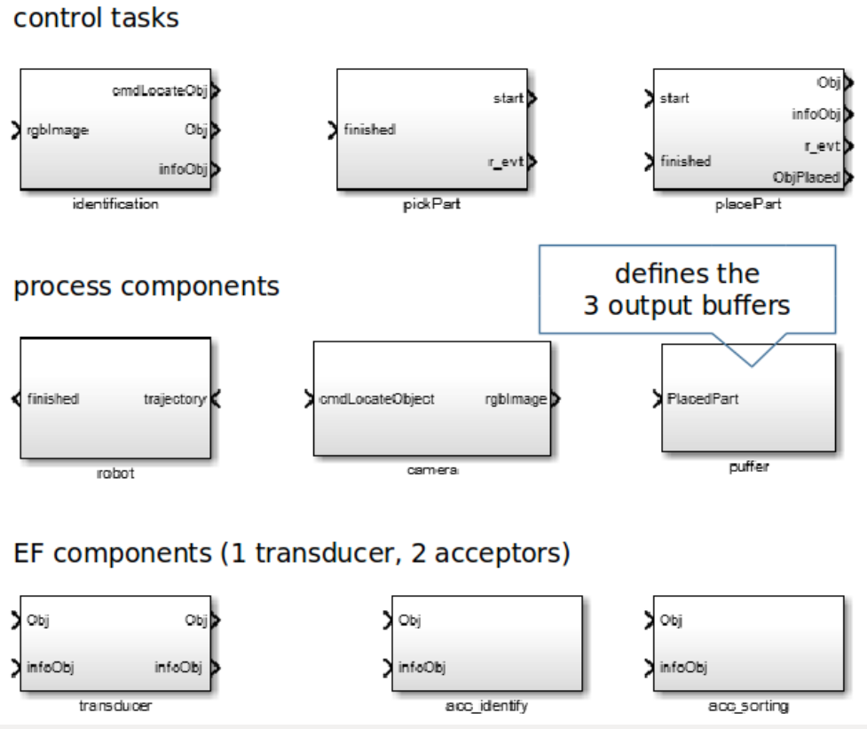
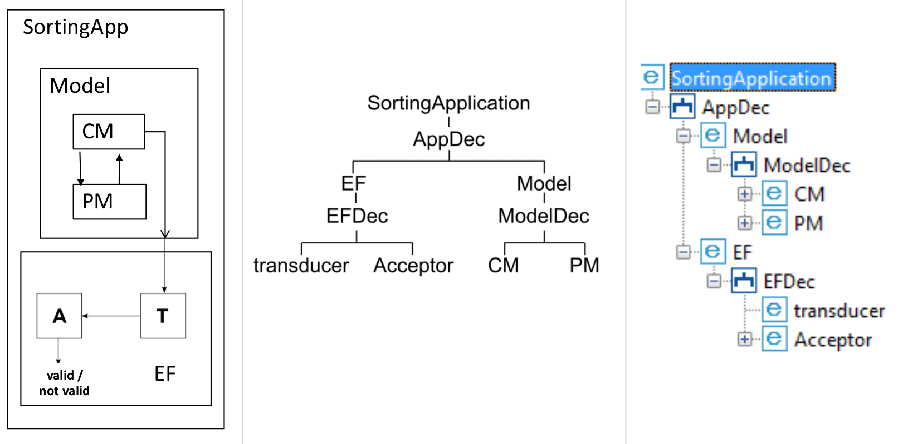
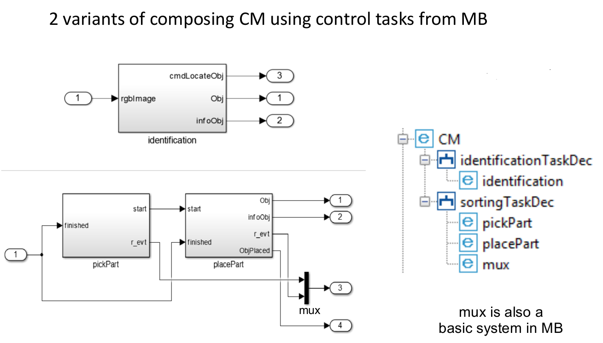
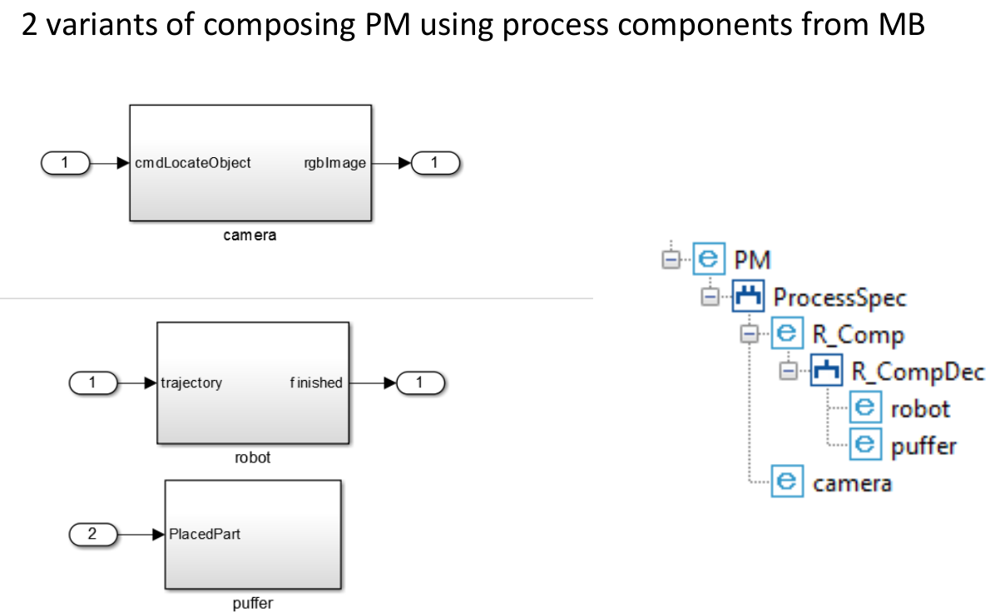
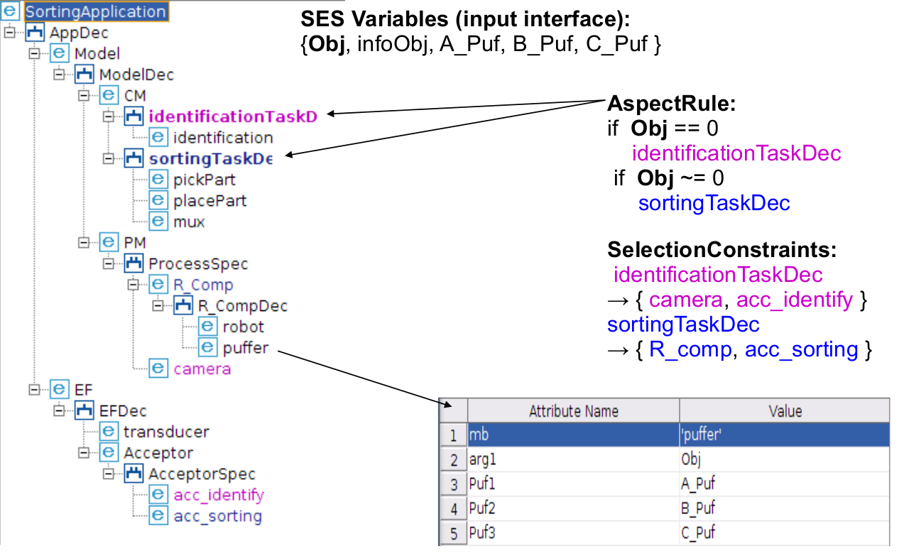

Reactive Robot Control (Sorting App)
Motivation
The example comprises several advanced concepts. Among other things, it shows the integration of the SES/MB approach in a more complex context by the example of a reactive robot control simulation.
The basic application problem consists of three kinds of parts, which randomly arrive at an input buffer and have to be sorted in three seperated output buffers using a camera and a robot (see Figure: Basis structure...).
The solution is seperated in subproblems, consisting of different task-based control structures and corresponding process components. All structural relations are specified in an SES. The SES defines references to basic models, which are implemented in Simulink / Stateflow, and organized in an MB. The overall execution is controlled by an Experiment Control Unit, which reactively generates executeable simulation models based on the SES and the MB at runtime. Each simulation model contains at a time only the control structure and process components that are necessary to solve the current subproblem (minimal complexity).
In the following, we describe the main apects of the example.
Basic structure of application:

Description
Basic Approach
The control application should be solved by applying the SES/MB approach in a closed-loop, which contains a Simulation Model Execution Unit (Simulator) and an Experiment Control Unit (see Figure).
Closed-loop SES/MB approach:

We seperate the overall application into subproblems (a set of model structures):
- identifying a part with the camera
(identification) - transport of the identified part by the robot from the input buffer to the appropriate output buffer
(sorting)
Each SM is essentially structured according to the Simulation Based Control (SBC) approach and the concept of Experimental Frame (EF). The later provides the interface to the EC. Hence, each specific SM is structured into:
- a
Modelconsisting of aControl Model(CM)and aProcess Model(PM)and - an
Experimental Fame(EF), consisting of aTransducer(T)and anAcceptor(A). We neglected theGeneratorof EF for simplification.
Note: For the example, the EC is implemented as a simple MATLAB function, called startFcn_Sorting, located in the example's directory.
MB With Basic Models
According to the fundamental structure of each SM, the MB contains 3 kinds of basic models:
- basic control tasks for composing a CM,
- basic process components for composing a PM
- components for composing an EF
MB with configurable models implemented with Simulink/Stateflow

Note: The MB is located in the example's subdirectory private and named MB.slx.
Basic SES Specification
According to the explanations above, each model structure consists of an EF, composed of a Transducer (T) and an Acceptor (A), and a Model, composed of a CM and a PM.
Starting structure of SES, mapping the basic model structure

Now, we have to refine the entities CM, PM and Acceptor. The Transducer must not be refined, because both model structures are using the same basic model transducer (see MB).
Refinement of entity CM and resulting model structures using basic models

Refinement of entity PM and resulting model structures using basic models

The process components input buffer and camera are summerized for simplification. The 3 output buffers are summerized in the entity puffer.
Now we will consider the basic overall SES model and how the different model structures are selected when pruning.
Basic overall SES

The fundamental selection is specified using AspectRules at the Aspects following the entity CM. The selection depends on the current setting of the SES Variable Obj. The dependencies between the CM, PM and EF are specified using Selection Constraints. The number of parts in each output buffer is safed in SES Variables (A_PuF, B_Puf, C_Puf).
Execute and Study the Example
You can execute the example using the MATLAB function startFcn... in the example's directory. The execution runs in a stepwise mode and you can observe the execution at the MATLAB prompt. The application stops, if the Condition A_Puf<=3 & B_Puf<=3 & C_Puf<=3 will be false.
REMARK
This is an experimental example to demonstrate the application of the toolbox in a more complex context. However, the example could be improvement in many parts.